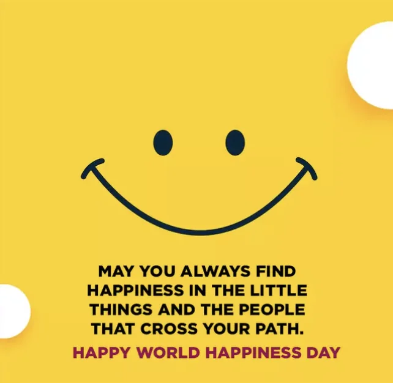

International Day of Happiness March 20
Happiness is a fundamental human goal. Encourage people to take action to promote happiness and well-being and promote a more compassionate world.
The United Nations General Assembly recognises this goal and calls for “a more inclusive, equitable and balanced approach to economic growth that promotes the happiness and well-being of all peoples.”
CARING AND SHARING is this year’s theme for this important day. This theme reminds us that lasting happiness comes from caring for each other, feeling connected and being part of something bigger.
What can we learn from Finland, a country that is consistently #1 position in happiness?
“It is explained by the high levels of trust and freedom in its society – which research shows contributes to well-being and productivity. Finland consistently ranks among the best in the world for transparency and the perceived lack of corruption.
Gratitude for the Little Things.
Amusement, play, and celebrations.
A One Time Experience.
Social connection.
Curiosity and new discoveries.
Life is meant to be celebrated!”
Governments and international organisations should invest in conditions that support happiness by upholding human rights and incorporating well-being and environmental dimensions into policy frameworks, such as the 17 Sustainable Development Goals. The effectiveness of governments in upholding peace and social order, as well as in the fields of taxation, legal institutions and delivery of public services, strongly correlates with average life satisfaction.
The United Nations invites each person of any age, plus every classroom, business and government to join in celebration of the International Day of Happiness.
The International Day of Happiness aims to make people around the world realize the importance of happiness within their lives.
No one is happy all the time, yet the most wonderful thing you can do is to continue to be happy and to share happiness with others, and speak to others about the importance of being kind, helping one another and appreciating the good things in your own lives.
For more ways to do this, click here